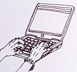
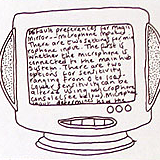

A History of the World
- 
- 
A History of the World in 100 Objects was a partnership project between the BBC and the British Museum, creating a radio programme and a website to document and discuss 100 key objects from the British Museum's collection.
Rattle worked with the BBC to identify and develop opportunities for further audience engagement via the online experience.
Our research-led approach enabled us to produce five different viable ideas, encompassing numerous platforms, and targeting non-traditional Radio 4 audiences.
These ideas were presented as illustrated user journey storyboards, along with implementation details.
The work fed into the BBC's overall project plan, and the design of the A History of the World in 100 Objects website.